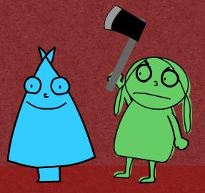

I feel like they want me to be silent. I guess I can't do that, maybe I did it a few years ago, but not anymore. I want to talk about what I'm feeling, I want to deal with the reasons I find I have to avoid my father when I walk through the halls of a house I don't know anymore (I know, I should shut the fuck up).
Anyways, I wish I could talk to my mother because she listens to me, but this is the one thing I can't talk to her about, so I must unfortunatly abstain. I wish I could talk to someone, but everytime I try to talk to my sister she just SHUTS UP whenever she hears something she doesn't want to hear. I don't understand this, I think it's going to cause her alot of problems in the future if she can't communicate to someone how she's feeling. Thank God I figured out how to do it, at least to some small degree.
And a petty return, no one calls, so they must not care. I guess I'm taking this one on alone.
:-/
I'm listening to "Pictures of You (Extended Mix)" and that makes me happy...

Wow, it's Christmas again. Woopie, seems like this year is not unlike all the others. Christmas is never really that much of a happy time for me. It was never my favorite holiday, except for maybe when I was younger and more materialistic, but of course, not much changes. This year will be small and without my mother, just like last year. I miss her. I can't wait to see her in March.
See, that's the thing, on Spring Break this year I'm going to Ohio to see my mom. I am told that, if she can manage it, she may let me take home a shiny reward--a NEW CAR. Well, not exactly new, it would be her car, the Grand Prix, but there AIN'T NOTHING wrong with that. That car is nice, and she tells me she will make sure it functions just fine for me. I would love that so much, it would be so amazing to have a real car and to be rid of that shitty excuse for an automobile. It's so embarassing driving it, people must think the worst of me. Soon, that will all change. Hello leather seats and tinted windows! Goodbye oil leaks, endless quanities of malfunctioning alternators, dying transmission, extremely loud exhaust system, melty motor, forever breaking rear tail lights, mysterious brake problem, misplaced paperclip in the steering column that would randomly set off my car horn, bizarre electrical problem that would randomly turn off my CD player, strange noise that is emitted from my steering column everytime I drive when it's cold, strange "L-shaped" pattern of lights that would appear on my dashboard indicator whenever my alternator started to overcharge to battery or when my alternator belt snapped all together, and OF COURSE, last, but not least, my squealing belt. I'll never get rid of you, I don't even try anymore. I'll miss your never ending passion for pissing me off and also your vicious blood curdling screams for attention.
Tomorrow, I won't be working. This is nice, sort of like last year when I worked into Christmas Eve morning and got to sleep all day while everyone rushed to get last minute gifts. This year Farhang cut me (that bastard) so I will be off with April getting last minute gifts for my family. I guess I could do Laura and my aunt (and April :-x), but my BIG MOMMA present for Jen certainly needs to be wrapped. Oh, she's going to love it...I can't wait to see how happy it will make her :-D
Pay no attention to my previous entry. I was being petty and it has been resolved. I'm just very lonely here, it sucks, but I got to talk to some people today that made me feel alot better, made me feel like that though I'm cut off for the time being, I'm still included somewhere out there in someone else's thoughts. How dull...resolved temporary bouts of depression. I wish I had multiple personalties, now THAT would be something. Wouldn't that be an interesting read. Constanly guessing whether or not I'm the raving lunatic, the mild-mannered journalism student, the egghead English major, or the insane Alien Sex Fiend! Oh, what fun...
For now, have a Merry Christmas and don't forget to do that whole end of the year regretting and resolving. In a few short days, it will be 2004, and we can start over again.
"Your hands didn't move, well neither did mine
New Year's will bring...
so much to say, but nothing comes out
like both of us left without words
both of us lost in this world
it's softer than ever before..."
"New Year's Project"
Further Seems Forever
Favorite present remains Buffy Season 5. I know, uninteresting. I didn't get any clothes at all, which really sucks, I was kinda hoping on one or two shirts or sweaters. I ordered my Making Fiends shirt at last though. That should do.
Since the holiday is at last over (THANK GOD), I think I'll buy the new Buffy Soundtrack and maybe spring for the Musical Soundtrack too. I'm listening to the new Strokes CD now. April got it for me. It's not as timely as Yoshimi, but who cares. It's better than the shit my sister listens to. Yoshimi Battles the Pink Robots was by far the best present last year, just amazing.
So, 6:45 a.m. until 6:00 p.m. tomorrow. Pray for me. If I haven't got back to some of you, try me again or just wait until I'm not running around or sleeping or watching some exciting DVD's.
I have nothing better to do...I wish I had a car. I know, I know, I have that sorry excuse that sits up in Athens now, but I wish I had one reliable one here that I could take places. I wish it was New Year's so I could see my friends. I wish people who came to Rich's knew how to READ.
That made me think, I'm pretty sure I'm going to be a pretentious asshole one day. Just like McAlexander! I'm going to bitch about how people need to have sense and there is no excuse for their laziness. I'm going to go on and on about how life is ridden with hard work and that nothing comes without a cost. You'll see! People will talk about me, but it won't matter. I'll be better then they are, smarter, and I'll be one looker too. Coat, tie, and one bald head under my top hat. Yes, that will be me!
For now, the Alien Sex Fiend will be reduced to his cell phone for the duration of the evening. My mother lost her AOL to the beautiful DSL goblin, and now I'm stuck down the Internet without a screen name to surf on. I would use trusty NMcClel369, but, you know...my dad reserves the earlier morning hours for God knows what. Um, so, yah, if I'm not sleeping or talking on my phone, I might just be chatting on it. A welcome distraction!
Oh, I don't know how much longer I can endure these abuses...